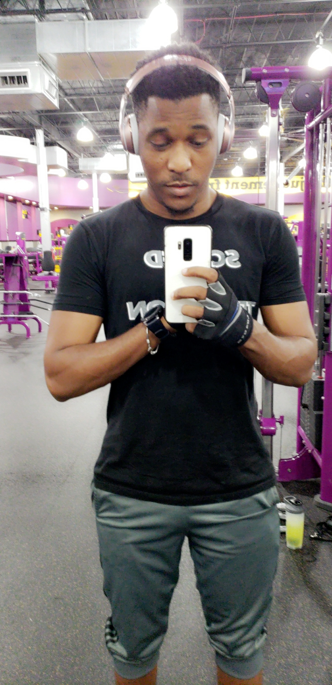
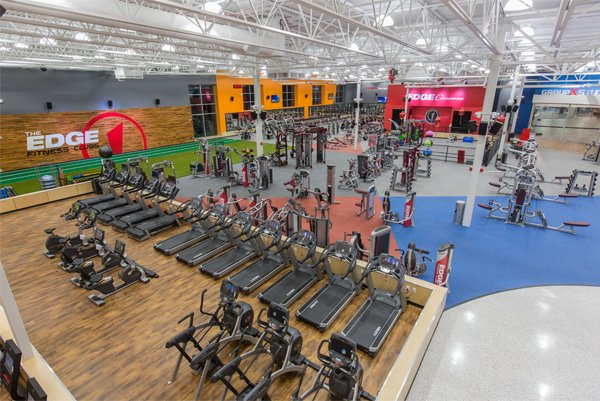

Birth place and journey to America
Moving from Togo to the United States permanently feels great, but at the same time it is sad leaving some of your loved ones and family behind.
There are many events in life, which can change one's way of thinking. As for me, one of the major changes in my life occurred when I moved from Africa to America.
I was born in the western part of Africa, in a country called Togo, the motherland with enormous beautiful colors and culture.
I am from the hot and humid air of Benin, from dusty dirt roads and sweltering sun. I am from Togo, the giant of Africa, where I saw the monstrous faces of civil.
I am from the land where I cried my first cry, Where I dreamt my first dream, where I smiled my first smile.
My workout journey
I’ve absolutely fallen in love with fitness, but to tell you the truth, I didn’t always have this love for it.
My fitness journey has been going on for almost two years now and it’s evolved SO much during that time.
When I first started to work out in the early stages of my muscles gain journey, I had very limited knowledge on exercise.
I would run one mile on the elliptical (which gradually increased to 3) and use the strength circuit machines at the gym.
I also discovered my love for heavy lifting around then, which still is one of my favorite forms of cardio.




Taking Family Responsabilities
My family counts on me much and highly. I take great pride in being the second oldest boy in my family.
Particularly since I serve as an example for my younger siblings and am always willing to assist my mother in any manner they require.
It can be challenging to take on the position of my brother's role model because my father was not in our lives, but having my mother by our sides can be incredibly beneficial.
When I was a small child, my parents got divorced and abandoned my siblings and me, which was difficult to go through. We were able to get through those challenging times because to my mum.
These experiences have strengthened me as a person and truly broadened my perspective because I always believed that I would be powerless in the future.
Being unable to attend college has been my worst dread since I was a young child. I traveled to the United States for a specific purpose.
My complete lack of knowledge of English was the main factor. Because of this, my mother decided to enroll me in an elementary school so I could begin learning English and essentially have a handle on my life in this country.
Due to the fact that my mother always worked and left my siblings and I alone at home, I truly felt helpless after that occurrence.
I overcome it, and because I've been through so much in my life, it just strengthened me.
>
LaunchCode Challenge
I've always been drawn to computer. In 2020, I dropped out from lindenwood University one semester away from my BA in Business and a minor in aviation.
I decided it would be a good idea to start my own Business. I realized that building a website would be the most effective method to accomplish this.
After doing some research, I came to the conclusion that learning how to make my own would be a rewarding experience and would enable me to achieve my website's goals.
After I started teaching myself CSS, HTML, things really took off. It was occasionally difficult to stay motivated when faced with a learning difficulty.
Several times, I would get to a lecture about a programming topic, a new language, or something similar, and it would just not make sense.
No matter how hard I tried, there were some things that I just couldn't grasp at first. Those were the dark times when it was so tempting to just give up on everything.
Adhering to a regimen was what was helpful. Every evening, I would set aside two hours to study programming. And I would always follow that schedule, no matter what.
WHAT I WANT TO WITH LaunchCode CERTIFICATION
Most individuals think that their ideal career would be to become a well-known actor or to do a task that they have seen several times.
However, with the development of technology, I would be more suited in a computer-related sector. As someone who has always been interested in computers,
being a professional software engineer is my ideal career goal. However, I am not sure whether I am cut out for this position. I also don't know if I can handle the demands of a career in this field.
Every time I observe how a software is utilized, I consider how I may speed up or improve its effectiveness.
Because of the competition I may encounter, obtaining this position could be challenging, but I am certain that I can demonstrate my enthusiasm for it and my willingness to devote a lot of time to anybody who is willing to hire me.
My concern is that I won't be qualified for the position, but with the help of Launchcode, I mature to widen my software knowledge,
I think I could start to feel more secure in my abilities.